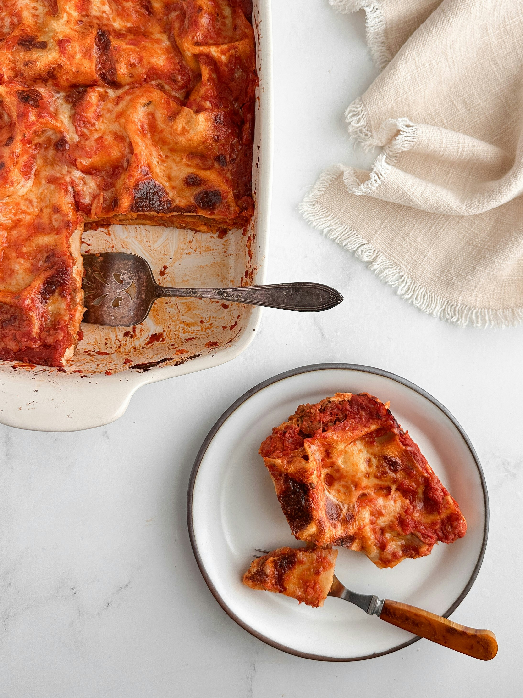

Pizza Casserole

Description
It's everyones favorite food, pizza! Well, not exactly.
This is a casserole that takes cues from the classic dish.
Pepperoni, parmesan, and italian sausage (or ground beef!) all make this dish great!
The dish takes 50 minutes to prepare, and then can
serve two people.
Ingredients
- Spiral Pasta (3 Cups)
- Italian Sausage or Ground Beef (1 Pound)
- Spaghetti Sauce (4 Cups)
- Drained Mushrooms (4 Ounce Can)
- Parmesan Cheese (1 Cup)
- Pepperoni (6 Ounces)
- Shredded Mozzarella (3 Ounces)
Steps
- Preheat oven to 350.
- Cook (in pot) and drain pasta. Return pasta to pot.
- Meanwhile, cook sausage/ground beef in a pan over med-high heat and then drain.
- Add sausage, spaghetti sauce and mushrooms to your pasta and then stir.
- Stir in parmesan cheese and half of your pepperoni slices. Spread the mixture into a greased 9x13 pan.
- Top with mozzarella cheese.
- Arrange remaining pepperoni slices over top.
- Finally, bake for 20 minutes until cheese is bubbly.
Back to Home